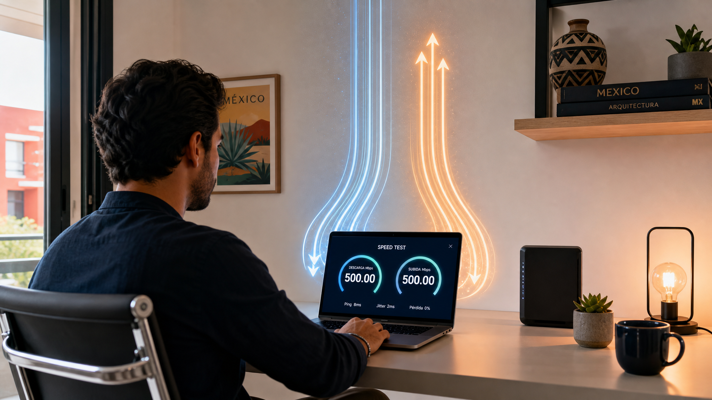

¿Qué es internet simétrico? La guía definitiva para mejorar tu conexión en casa
¿Alguna vez te ha pasado que puedes ver una película en 4K sin interrupciones, pero en el momento en que intentas enviar un archivo pesado por correo o subir un video a YouTube, la conexión parece colapsar? Esta frustración es muy común y la razón suele estar en un concepto técnico que pocos conocen, pero que es vital para el hogar moderno: el internet simétrico.
Si estás buscando mejorar tu experiencia digital, entender qué es internet simunto es el primer paso para dejar de sufrir por la lentitud en tus videollamadas o en tus partidas de videojuegos. En este artículo, te explicaremos de forma sencilla y práctica todo lo que necesitas saber para tomar la mejor decisión al contratar tu próximo plan de internet en México.
¿Qué es el internet simétrico y por qué es vital hoy en día?
Para entender el internet simétrico, primero debemos entender cómo funciona la comunicación en la red. Cuando navegas por internet, realizas dos tipos de acciones: descargas (bajada) y cargas (subida).
- La bajada (Download): Es la velocidad con la que recibes información de la red hacia tu dispositivo. Por ejemplo, cuando ves un video en Netflix, descargas una canción en Spotify o abres una página web.
- La subida (Upload): Es la velocidad con la que envías información desde tu dispositivo hacia el mundo. Por ejemplo, cuando envías un correo con un PDF pesado, subes una foto a Instagram o activas tu cámara en una reunión de Zoom.
El internet simétrico es aquel servicio de conexión donde la velocidad de subida es exactamente igual a la velocidad de bajada. Si contratas un plan de 100 Mbps, tendrás 100 Mbps para descargar contenido y 100 Mbps para subirlo.
En cambio, la mayoría de las conexiones tradicionales que hemos usado en las últimas décadas son asimétricas. En una conexión asimétrica, la velocidad de bajada es muy alta, pero la de subida es significativamente menor (a veces apenas una décima parte de la bajada).
Para comprender mejor los conceptos de velocidad, te recomendamos leer nuestro artículo sobre qué significa la velocidad de internet, donde profundizamos en los términos técnicos que afectan tu navegación.
Internet simétrico vs. asimétrico: Entendiendo la diferencia real
Para que lo visualices mejor, imagina una carretera que conecta tu casa con el resto del mundo.
La conexión asimétrica (La carretera de un solo carril gigante)
Imagina una carretera donde hay 10 carriles para que los autos entren a tu casa (descarga), pero solo hay un pequeño carril estrecho para que los autos salerm de tu casa (subida). Si intentas que salgan muchos autos al mismo tiempo (como subir un video o hacer una transmisión en vivo), se formará un embotellamiento inmediato. Esto es lo que sucede cuando intentas hacer muchas actividades de "subida" en un plan de cable tradicional o ADSL.
La conexión simétrica (La autopista de carriles iguales)
Ahora imagina una autopista moderna con 10 carriles para entrar y 10 carriles para salir. No importa cuánta información estés recibiendo o enviando; hay espacio suficiente para que ambos flujos de datos se muevan sin estorbarse. Esta es la gran ventaja de la fibra óptica moderna.
Principales diferencias en un vistazo:
| Característica | Internet Asimétrico | Internet Simétrico |
|---|---|---|
| :--- | :--- | :--- |
| Velocidad de Bajada | Alta | Igual a la de subida |
| Velocidad de Subida | Baja | Igual a la de bajada |
| Ideal para... | Ver streaming y navegar | Teletrabajo, Gaming, Streaming, Nube |
| Tecnología común | Cable coaxial, ADSL | Fibra Óptica (FTTH) |
| Sensación de uso | Lentitud al enviar archivos | Fluidez total en ambas direcciones |
¿Por qué tu hogar necesita una conexión simétrica? (Casos de uso reales)
Hace diez años, la mayoría de las familias solo usaban internet para "consumir" contenido: leer noticias, ver videos o revisar redes sociales. Hoy, la dinámica ha cambiado. Ahora también "creamos" y "compartimos" contenido constantemente. Aquí te presento los escenarios donde el internet simétrico marca la diferencia:
1. El auge del Home Office (Teletrabajo)
Si trabajas desde casa, tu conexión es tu herramienta de trabajo. En una reunión por Microsoft Teams, Zoom o Google Meet, tú no solo estás "recibiendo" video (bajada), también estás "enviando" tu imagen y audio en tiempo y alta definición (subida).
- Con internet asimétrico: Tu imagen se pixela, se congela o el audio llega con retraso porque tu canal de subida está saturado.
- Con internet simétrico: Tu presencia en la reunión es fluida, permitiéndote compartir pantalla y documentos pesados sin que nadie note problemas de conexión.
2. Gamers y la importancia de la latencia
Para los jugadores de videojuegos en línea (como Fortnite, Call of Duty o League of Legends), la velocidad de subida es crucial. Aunque no "descargas" el juego mientras juegas, tu consola o PC debe enviar constantemente tus movimientos, disparos y comandos al servidor del juego. Un internet simétrico ayuda a mantener un ping bajo y reduce el temido lag, asegurando que tus acciones se reflejen en tiempo real.
3. Creadores de contenido y redes sociales
¿Subes videos a YouTube, haces directos en Twitch o compartes Reels en Instagram? Si intentas subir un video de 1 GB con una conexión asimétrica, podrías tardar horas. Con una conexión simétrica, lo que antes tomaba una tarde, puede tomar solo unos minutos.
4. La era de la Nube (Cloud Computing)
Hoy en día, guardamos nuestras fotos en iCloud, nuestros documentos en Google Drive y nuestras copias de seguridad en Dropbox. Cada vez que guardas un archivo en estos servicios, estás realizando una acción de subida. Si tienes muchos dispositivos haciendo respaldos automáticos, una conexión asimétrica se volverá un cuello de botella para toda la familia.
5. Hogares Inteligentes (IoT)
Las cámaras de seguridad Wi-Fi son parte del hogar moderno. Estas cámaras necesitan subir video constantemente a la nube para que puedas revisarlo desde tu celular cuando no estás en casa. Si tienes varias cámaras, una conexión con poca subida hará que el video se vea entrecortado o que la aplicación de seguridad no cargue.
Cómo identificar y contratar un buen servicio de internet simétrico en México
No todos los proveedores de internet en México ofrecen la misma calidad de servicio. Al momento de revisar tu factura o preguntar por un nuevo plan, sigue estos consejos prácticos:
- Busca la palabra "Fibra Óptica": La tecnología de fibra óptica (FTTH - Fiber to the Home) es la que permite alcanzar la simetría. Evita tecnologías antiguas como el cable coaxial si tu prioridad es la subida.
- Pregunta directamente por la subida: No te dejes llevar solo por el número grande (ej. "¡Tenemos 500 Megas!"). Pregunta específicamente: "¿La velocidad de subida es igual a la de bajada?". Si te dicen que la subida es de solo 20 o 50 Mbps, estás ante un plan asimétrico.
- Revisa el contrato: Los proveedores suelen especificar las velocidades de descarga y carga en las letras pequeñas de sus planes.
- Compara proveedores locales y nacionales: En México, empresas como Totalplay o Telmex (en sus planes de fibra óptica) suelen destacar por ofrecer velocidades simétricas, mientras que otros proveedores de cable tradicional suelen ser asiméticamente limitados.
Tips para optimizar tu velocidad de internet en casa
Ya que tengas tu conexión, aquí te damos unos consejos prácticos para que aproveches cada mega de tu plan:
- Usa cable Ethernet para lo crítico: Si eres gamer o trabajas con archivos pesados, evita el Wi-Fi. Conecta tu computadora o consola directamente al router mediante un cable Ethernet. Esto elimina la interferencia y aprovecha la simetría real.
- Ubica bien tu Router: El Wi-Fi pierde fuerza con las paredes y los obstáculos. Coloca el router en un lugar central y elevado de la casa.
- Gestiona el ancho de banda: Si alguien en casa está descargando un juego de 100 GB, es natural que la subida se vea afectada. Considera usar routers con tecnología QoS (Quality of Service), que permiten priorizar el tráfico de tu computadora de trabajo sobre el de la televisión.
- Actualiza tus dispositivos: Los dispositivos viejos tienen tarjetas de red antiguas que no pueden procesar altas velocidades. Si tienes un plan de 500 Mbps pero tu laptop es de hace 10 años, nunca verás esa velocidad.
Conclusión: ¿Vale la pena el cambio?
En conclusión, el internet simétrico no es solo un lujo para profesionales o entusiastas de la tecnología; es una necesidad para cualquier hogar que dependa de la nube, el teletrabajo o el entretenimiento digital de alta calidad. Aunque a veces el costo de un plan simétrico pueda ser ligeramente superior a uno asimétrico básico, la inversión se traduce en menos estrés, menos interrupciones y una productividad mucho mayor.
Si sientes que tu conexión actual te limita cada vez que intentas enviar un archivo o participar en una videollamada, es momento de revisar tu contrato.
¿Tu internet actual te está frenando? No esperes a la próxima caída de señal. Revisa las especificaciones de tu plan hoy mismo y, si es necesario, contacta a tu proveedor para preguntar por sus opciones de fibra óptica simétrica. ¡Tu productividad y tu entretenimiento te lo agradecerán!